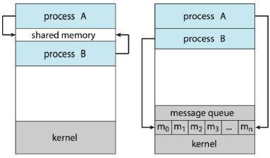

IPC(Inter-Process Communication)¶
1절. IPC
2절. 프로세스
3절. 모델
4절. IPC in SMS
5절. 요약
1절. IPC¶
IPC 용어¶
- 프로세스 간 통신
- Inter-Process Communication
IPC 개념¶
- 협력적인 프로세스 간 데이터를 교환하는 통신 기법
2절. 프로세스¶
프로세스 개념¶
- 실행중인 프로그램
- 프로그램을 실행하는 작업 단위
- 프로세스 실행을 위한 작업의 최소 단위인 테스크(Task)의 필요 자원
| 필요 자원(Resources) |
|---|
| CPU 점유 |
| 메모리(Memory) |
| 파일(File) |
| 입출력 장치(IO System) |
프로세스 특성¶
| 종류 | 설명 |
|---|---|
| 독립적인 프로세스 | 시스템에서 실행 중인 다른 프로세스들과 데이터를 공유하지 않는 경우 |
| 협력적인 프로세스 | 시스템에서 실행 중인 다른 프로세스들에 의해 영향을 주거나 받는 경우 |
프로세스 간 협력 이유¶
1. 정보 공유(Information Sharing)¶
- 여러 응용 프로그램이 동일한 정보를 관리하는 경우 발생
- 정보를 병행적으로 접근할 수 있는 환경 필요
2. 계산 가속화(Computation Speed Up)¶
- Task-Rapidly-Execute 목적을 가질 경우 서브 Task로 분할된 병렬 실행 환경 필요
- 다만, 가속화의 경우 여러 개의 처리 코어를 가진 경우에만 달성 가능
3. 모듈성(Modularity)¶
- 시스템 기능을 별도의 프로세스나 스레드로 분할 후 모듈식 형태로 시스템을 구성할 경우
3절. 모델¶
모델 종류¶

| 종류 | 설명 |
|---|---|
| 공유 메모리(Shared Memory) | - 협력 프로세스들에 의해 공유되는 메모리 영역으로 구축 - 공유 메모리 영역을 구축할 때 시스템 콜 필요 - 공유 메모리 영역 구축 후 모든 접근은 일반적인 메모리 접근으로 취급되어 커널의 도움 필요 X |
| 메시지 전달(Message Passing) | - 통신이 협력 프로세스들 사이에 교환되는 메시지를 통해 구축 - 충돌 회피 필요성 X - 적은 양의 데이터 교환에 유용 - 분산 시스템에서 공유 메모리보다 쉬운 구현 - 커널 간섭 등 부가적인 시간 소비 작업으로 느린 속도 |
4절. IPC in SMS¶
IPC in SMS ?¶
- IPC in Shared-Memory Systems
- 공유 메모리 시스템에서의 프로세스 간 통신
메커니즘¶
1. 설정 과정¶
- 프로세스 간 통신을 위해 공유 메모리 영역(Segment) 구축
- 공유 메모리 영역은 생성한 프로세스의 주소 공간에 위치
- 통신 목적의 다른 프로세스들은 공유 메모리 영역를 자신의 주소 공간에 추가
2. 운영체제 역할¶
- 제약
- 프로세스 간 메모리 접근 금지
- 공유 메모리를 사용할 경우 두 프로세스는 위의 제약 조건 제거에 동의
3. 통신 방식¶
- 공유 영역에 직접 읽고 쓰면서 정보 교환
4. 데이터 형식 / 위치¶
- 전적으로 통신하는 프로세스들이 결정
5. 동기화¶
- 동시에 동일한 위치에 쓰지 않도록 스스로 책임
- 데이터 충돌 방지
문제점¶
생산자<->소비자 간 문제¶
- 생산자: 정보 생성
- 소비자: 정보 소비
발생 요인 (1) : 버퍼¶
- 생산자와 소비자의 병행 실행
- 정보가 채워지고 소모될 항목들을 담을 버퍼가 공유 메모리 영역(Segment)에 필요
버퍼 유형¶
| 유형 | 특징 | 대기 조건 |
|---|---|---|
| 무한 버퍼(Unbounded Buffer) | 버퍼 크기 한계 X | 소비자: 새 항목 대기 생산자: 항상 생산 가능 |
| 유한 버퍼(Bounded Buffer) | 버퍼 크기 고정 | 소비자: 버퍼가 비어있을 경우 대기 생산자 : 버퍼가 가득찬 경우 대기 |
유한 버퍼 구현(공유 메모리)¶
using namespace std;
const int SIZE = 10;
struct item
{
//...
};
item buffer[SIZE];
int in = 0, out = 0;
- SIZE : 크기
- buffer : 원형 배열
- in, out : 논리 포인터
- in : 비어 있는 위치
- out : 채워진 위치
- in == out : 비어있음
- ((in + 1) % SIZE) == out : 가득 참
공유 메모리를 사용한 생산자 프로세스¶
using namespace std;
void producer()
{
item next_produced;
while(true)
{
// 1. 뮤텍스로 공유 자원 접근 보호
unique_lock<mutex> lock(buffer_mutex);
// 2. 조건 변수 대기
buffer_full.wait(lock, []{return((in + 1) % SIZE) != out; });
// 3. 아이템 추가 및 포인터 이동
buffer[in] = next_produced;
in = (in + 1) % SIZE;
// 4. 소비자가 대기 중일 경우 알림
buffer_empty.notify_one();
}
}
공유 메모리를 사용한 소비자 프로세스¶
using namespace std;
void consumer()
{
item next_consumed;
while(true)
{
// 1. 뮤텍스로 공유 자원 접근 보호
unique_lock<mutex> lock(buffer_mutex);
// 2. 조건 변수 대기
buffer_empty.wait(lock, []{return in != out; });
// 3. 아이템 소비 및 포인터 이동
next_consumed = buffer[out];
out = (out + 1) % SIZE;
// 4. 생산자가 대기 중일 경우 알림
buffer_full.notify_one();
}
}
발생 요인 (2) : 동기화¶
- 소비자가 생산되지 않은 항목을 시도하지 않도록 동기화 필요
5절. 요약¶
1. IPC 기본 개념¶
-
정의
-
협력적인 프로세스들 간 데이터를 교환하는 통신 기법
-
필요성
-
정보 공유
- 계산 가속화 (병렬 처리)
-
모듈성 확보
-
핵심 구분
- 협력적 프로세스는 IPC 필수
2. IPC 모델 비교¶
| 모델 | 특징 |
|---|---|
| 공유 메모리 (Shared Memory) | - 초고속 통신 - 설정 시 시스템 콜 필요 - 커널 간섭 없이 일반 메모리 접근으로 처리 |
| 메시지 전달 (Message Passing) | - 커널 간섭이 많아 느림 충돌 회피가 용이 - 분산 시스템에 유리 |
3. 공유 메모리 IPC의 핵심 메커니즘 (SMS)¶
- 설정
- 공유 메모리 세그먼트를 생성한 프로세스의 주소 공간에 위치
- 다른 프로세스들이 자신의 주소 공간에 추가(Attach)함으로써 통신 시작
- 통신
- 공유 영역에 직접 읽고 쓰기를 통해 정보를 교환
- OS 역할 최소화
- 책임
- 동시에 동일한 위치에 쓰지 않도록 (경쟁 조건 방지) 스스로 동기화
4. 생산자-소비자 문제 해결¶
- 표준 동기화 방법
- 공유 메모리 시스템에서 발생하는 경쟁 조건과 바쁜 대기 문제 해결 가능
- 해결책
- 뮤텍스로 공유 버퍼 접근을 상호 배제(lock)
- 조건 변수로 프로세스 효율적 대기
- 버퍼가 가득 찼을 때
- 버퍼가 비었을 때
논리¶
| 입장 | 행동 |
|---|---|
| 생산자 | - 버퍼가 가득 찬 경우 대기 - 아이템 추가 후 소비자에게 알림 |
| 소비자 | - 버퍼가 빈 경우 대기 - 아이템 소비 후 생산자에게 알림 |